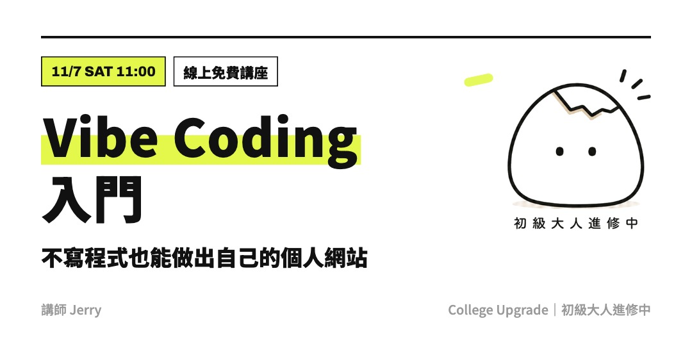
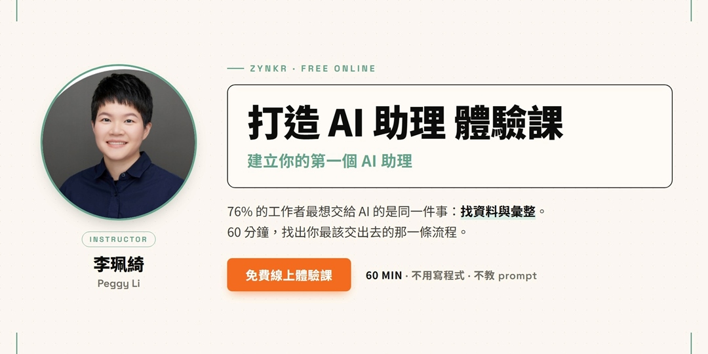
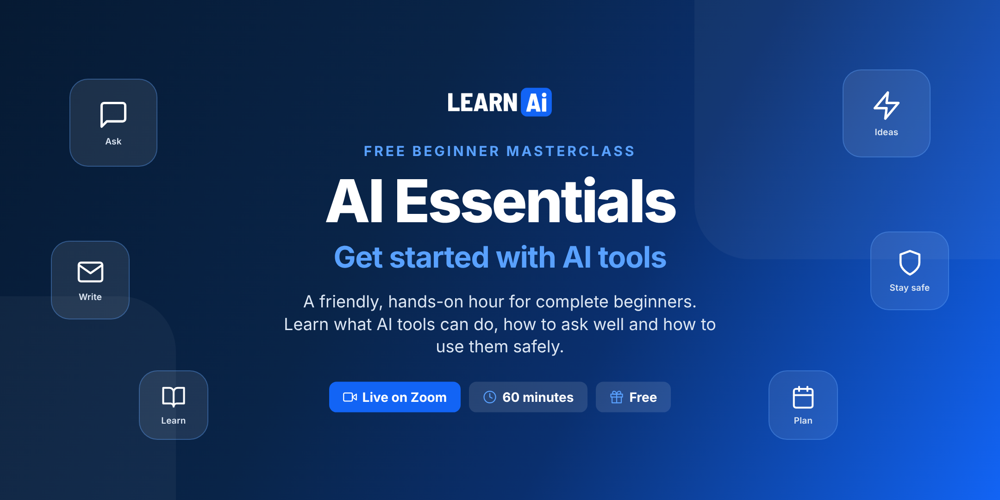

今日舉行 · 華語午間
來源：ACCUPASS
Vibe Coding 入門｜不寫程式也能做出個人網站
免費 Gemini 現場示範：講需求 → AI 寫站 → 來回改。為面試同作品集準備「用 AI 做過咩」嘅證據。
ACCUPASS 報名 →卷報 · 免費 AI 課程
二零二六 · 十一月七日 · 星期六
篩選準則：優先收錄今日舉行嘅線上免費 AI 研討會／工作坊；並補上今日仍可報名、隨時開讀嘅常設免費課。連結以官方為準。
今日焦點：華語午間「Vibe Coding 入門」——用免費 Gemini 現場砌個人網站；上午另有「打造 AI 助理」體驗課（找資料與彙整）。晚間有英語 AI Essentials；本週二、三仍可報名 Google AI Studio、AWS Harness、Workspace Gemini、AI Skill 入門。若水學院「AI 員工」系列進行中。常設免費自學課見下方。
今日焦點 · 華語線上講座
60 分鐘現場示範：用免費 Gemini 做 Vibe Coding——你講清楚想要嘅網站，程式交俾 AI。睇完好示範、一句話生成、再改顏色同作品欄，帶走不寫程式都能做個人作品集嘅完整流程。適合履歷寫咗「熟悉 AI」但講唔出做過咩嘅朋友。
ACCUPASS 報名 →
免費 Gemini 現場示範：講需求 → AI 寫站 → 來回改。為面試同作品集準備「用 AI 做過咩」嘅證據。
ACCUPASS 報名 →
調查顯示 76% 工作者最想 AI 幫手「找資料與彙整」。60 分鐘體驗課：搵出你手上最該交俾 AI 嘅流程，帶走第一個助理設計圖。不教 prompt、唔使寫程式。
ACCUPASS 報名 →
新手友善 60 分鐘：ChatGPT／Claude／Gemini／Copilot 比較、四段式提示公式、安全使用；現場跟做三個真實任務，帶走提示詞表同 7 日練習計劃。
Eventbrite 報名 →探討 UX／產品思維點樣嵌入 AI 軟件開發生命週期：解對問題、信任、可控性、可解釋性。唔係提示工程課，適合設計、PM、研發。
Meetup 報名 →
由零開始：用 AI 自動化資料整理、內容產出同日常流程。系列進行中，今日仍可報名跟進。
ACCUPASS 報名 →以下場次喺未來數日舉行，今日仍開放報名（名額／審核以官方為準）。
新手向：Google AI Studio 係咩、Vibe Code 點起步、AI 工作流概覽；現場示範做出免費 App。適合 15–70 歲想入門嘅人。
ACCUPASS 報名 →面向企業垂類場景嘅 Harness 架構思想，同基於 AWS 智能體技術嘅實作分享；設抽獎。適合想由 Demo 走向生產嘅工程／架構朋友。
ACCUPASS 報名 →Meet 摘要、Gmail 開發信、Sheets 客戶分析、Slides 銷售提案、跨文件整理。請用公司信箱報名；審核通過先有出席提醒。
ACCUPASS 報名 →
認識 AI Skill 核心概念、同一般 Prompt 嘅分別，示範如何建立固定使用方式，令 AI 變成真正工作助手。
ACCUPASS 報名 →以下為長期開放、可即刻自學嘅免費線上課程／教材；唔係今日專場，但適合錯過直播後補學。
十二章實作：Transformers、Datasets、Tokenizer、微調同推理。官方寫明完全免費、無廣告。適合想親手煉 LLM／NLP 嘅工程師。
開讀 →由 Agent 基礎到 smolagents、LlamaIndex、LangGraph；含 agentic RAG 同結業專案。想跟當下「代理式 AI」潮流可由此入門。
開讀 →經典免費深度學習課：電腦視覺、NLP、表格數據、部署；用 PyTorch／fastai。需一定 coding 經驗（建議 Python），可用免費雲端 GPU。
開讀 →開源課綱：提示工程到 RAG 同 Agents；Python／TypeScript 範例。可讀教材即學；跑程式可用 Azure／Foundry Local 等（部分 API 或需費用）。
開讀 →非技術向：生成式 AI 能做／不能做咩、提示工程同業務影響。影片免費；實驗室／證書或需 PRO。適合想建立共同語言嘅產品同管理層。
開讀 →Google 經典 ML 速成：概念、TensorFlow 練習同真實案例。搭配 Introduction to Generative AI 等「No charge」路徑，適合由 ML 基礎補起。
開讀 →官方學習中心：Claude 使用、AI Fluency、Claude Code、API／MCP 等。適合想系統學習用 Claude 同相關工具嘅人。
開讀 →